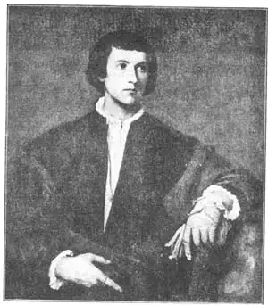

14
SIX VENETIANS
六个威尼斯人

VENICE is a city where the streets are water and where you take a boat instead of an automobile to go from place to place. Nowadays Venice belongs to Italy, but in the time of the Renaissance, though Venice was in Italy, it didn’t belong to Italy. There wasn’t any republic of Italy then, and Venice was an independent state, a republic that governed itself. Venice had its own army and navy, its own ruler called the Doge, and its own way of doing things. It had its own great painters, too, during the Renaissance— painters still famous above all others for the wonderful colors they gave to their pictures.
In the early years of the Renaissance there was a painter of Venice named Bellini (Bel-leen’ee) and he had two sons who also became painters. The sons were better painters than their father. One of the Bellini brothers taught painting to two young men who became better painters than any of the Bellinis. These two men were called Giorgione (Jor-jone’ay), which means Big George, and Titian (Tish’an), which just means Titian. Three Bellinis, Giorgione, and Titian—five men with only three names to remember.
I wish I had room to tell you more about the Bellinis. I think you would like their pictures of the Doges, the rulers of Venice. But there isn’t room in this chapter for all of them, so we’ll begin with Giorgione.
Giorgione is called one of the greatest of painters. Like Leonardo da Vinci, he left very few pictures that we are sure he himself painted. A famous painting called “The Concert” is thought by most people to have been painted by Giorgione, but others think it was painted by Giorgione’s friend Titian. “The Concert” shows the head and shoulders of three men. One of these men is seated at a clavichord. Do you know what a clavichord is? It is a musical instrument like a piano that was used before pianos were invented. The second man has a violin in his hand, and the third wears a big hat with feathers on it that makes him look like a woman. In our house, when I was a boy, we had a photograph of “The Concert” on the wall and I always thought the man with the big hat was a woman until I grew up.
Unfortunately Giorgione didn’t live long enough to paint many pictures. A terrible disease called the plague spread through Venice. Giorgione caught the plague and died when he was only about thirty-two years old.
His friend Titian lived to be a very old man, and so he had time to paint many more pictures than Giorgione. Titian was especially good at painting portraits of the noblemen of his time. One of these portraits is called “The Man with the Glove.” No one now knows who the man with the glove was, but almost every one likes the picture. How do you like it? Look on the opposite page.
Titian could paint other kinds of pictures besides portraits. He painted a picture for an altar in a church in Venice called “The Assumption,” which shows the Madonna entering heaven. The Venetians liked it tremendously. They especially liked its rich glowing color, for Venice itself was full of color, with its deep blue sea on every side and its marble palaces gleaming in the brilliant sunlight.
Venetians even liked pictures painted on the outside of their buildings, to add to the bright colors of the town. Both Giorgione and Titian made many paintings on the outside house walls, but all these have now disappeared, washed away by the weather.
At last after a long life of painting, Titian died—some say from the same disease that had killed Giorgione, the plague.
There were still great artists left in Venice, however. One of these was called Tintoretto, which means Little Dyer, because his father was a dyer. Tintoretto was much younger than Titian. When he was still a boy he was sent to Titian’s studio, or workshop, to learn painting. For some reason Titian let him stay at his studio for only ten days and after that Tintoretto had to teach himself to paint.

No. 14-1 THE MAN WITH GLOVE（《戴手套的男人》） TITIAN（提香 作）
He too painted many pictures on the outside walls of buildings, but these have washed away like Giorgione’s and Titian’s. Titian had always been careful to make good bargains when he sold his paintings, but Tintoretto didn’t seem to care for money. He was satisfied to take much less for his pictures than they were worth. Often he even gave them away.
One of Tintoretto’s greatest undertakings was to paint pictures for the walls of a building called the Scuola di San Rocco in Venice. Michelangelo had made his wall paintings on wet plaster, Leonardo had made his on dry plaster, but Tintoretto made his on canvas. Then the canvas with the painting on it was fastened to the wall. The San Rocco pictures were fastened to the wall.
Tintoretto used to make little clay figures to use as models when he painted. He worked very quickly and so he was able to paint a great many pictures in his lifetime. Most of them are full of energy and action. Some of his figures seem to be rushing through the air. So much action and movement made his pictures very different from the quiet ones of early Italian painters. Tintoretto’s were more like Michelangelo’s energetic paintings. But Tintoretto also had the glowing colors of Titian.
Over his studio door he put these words: “The drawing of Michelangelo and the color of Titian.” Sometimes he went beyond Titian, whose colors were golden browns and rich reds and greens. Tintoretto’s later pictures contained soft shades of gray and had a silvery finish rather than a golden glow.
One of Tintoretto’s famous paintings is called “The Miracle of Saint Mark.” The story goes that Saint Mark had a faithful servant who was sentenced to be tortured to death for being a Christian. Saint Mark was away when this happened. The servant was stretched on the ground in front of the judge’s chair and the torture was about to begin. Suddenly the tools broke in the executioner’s hands as Saint Mark appeared in the air above. He had come to save his servant.
Tintoretto’s picture shows Saint Mark rushing through the air above the executioner, but nobody in the picture, except a little baby. has noticed him. All are looking at the broken tools of the executioner.
When Tintoretto was an old man he was given the order to paint a huge picture of Paradise. The picture was to be large enough to cover a wall space thirty feet high and seventy-four feet long. Tintoretto set to work and finished the largest painting on canvas in the world. His “Paradise” shows Christ and the Madonna seated on clouds in heaven. Below them are crowds of saints and angels, over five hundred figures altogether. This painting was Tintoretto’s last great work. He died soon after finishing it.
Some of Tintoretto’s paintings were much better than others. The Venetians used to say he had three pencils, one of gold, one of silver, and one of iron. By this they meant that some of his pictures were wonderfully done, some were only fairly well done, and some were poorly done. Perhaps this is why people have had so many different opinions about Tintoretto.
Venice had great painters after Tintoretto. But certainly the Bellinis, Giorgione, Titian, and Tintoretto are enough great men to squeeze into one little chapter!
【中文阅读】
威尼斯是一座水城。城的通路是水道，所以，在威尼斯出行，就不能搭车而是坐船。如今，威尼斯属于意大利。然而在文艺复兴时期，虽然威尼斯位于意大利，却不隶属意大利。那时候还没有什么意大利共和国，威尼斯是一个独立的国家，一个自己统治自己的共和国。威尼斯拥有自己的军队，还有海军。他们的统治者称总督，按自己的方式行事。他们在文艺复兴时期也有伟大的画家——这些画家至今仍然很有名，主要是因为他们绘画的色彩非常鲜亮。
文艺复兴早期，威尼斯有一位画家叫贝里尼。他有两个儿子，后来也成了画家，甚至比父亲更出色。一个兄弟收了两个年轻的学徒。这两个年轻人后来比贝里尼家族所有的画家都出名。这两个人一个叫乔尔乔涅，就是大乔治的意思，另一个叫提香——就是“黄褐色”的意思。这五个人只要记住三个名字就可以了——贝里尼父子仨、乔尔乔涅和提香。
我希望能介绍更多关于贝里尼家族的故事。我想，他们为威尼斯统治者——总督们——画的画像，肯定令人喜欢。但要将他们全都介绍，这个章节肯定不够，所以我们就先从乔尔乔涅开始。
乔尔乔涅被称作最伟大的画家之一。同列奥纳多·达·芬奇一样，我们能确定是他本人画的画留下的很少。有幅叫做《音乐会》的名作，大多数人认为是乔尔乔涅画的，但有人认为是乔尔乔涅的朋友提香画的。《音乐会》画的是三个男人的脑袋和肩膀。其中一人坐在翼琴旁。你知道翼琴是什么吗？那是一种很像钢琴，但在钢琴问世之前使用的乐器。另外一人手里拿着小提琴。第三个人头上戴着大帽子，帽檐上插着羽毛，使他看去像一个女人。我小时候，家里墙壁上也挂了一幅《音乐会》的照片，我一直以为那个戴帽子的是女的，长大后才知道原来他是男的。
不幸的是，乔尔乔涅寿命短暂，所以就没画多少画。当时有种叫瘟疫的可怕疾病在威尼斯肆虐。乔尔乔涅染上了瘟疫，32岁就去世了。
他的朋友提香却长寿，所以与乔尔乔涅相比，他就有充裕的时间去画更多的画。提香尤其擅长为当时的贵族们画肖像画。其中有幅画叫《戴手套的男人》。至今也没有人知道这幅画中戴手套的男子到底是谁，但是几乎人人都喜欢这幅画。你觉得怎样呢？
提香除了肖像画外，也画其他类型的画。他曾经为威尼斯一座教堂的祭坛画过一幅叫《圣母升天》的画，描绘了圣母玛利亚升天的景象。威尼斯人非常喜欢这幅画，尤其是它绚丽的色彩，因为威尼斯本身就是五颜六色的：深蓝色的大海环绕四周，大理石宫殿在明媚的阳光下熠熠闪烁。
威尼斯人还喜欢在房子的外墙壁上画画，这些画为整座城市增添了明亮的色彩。乔尔乔涅和提香都在房子的外墙壁上画过许多的画，但是经过风吹雨打，现在这些画都已不复存在了。
提香经历了漫长的绘画生涯后，最终也离开了人世。有人认为他和乔尔乔涅一样死于一场瘟疫。
然而，威尼斯还有伟大的画家。其中有一个叫丁托列托，意思是“小染匠”，因为他父亲曾是一个染工。丁托列托比提香小很多。他很小就被送到提香的工作室或画室学画。可不知什么原因，提香只让丁托列托在他的画室待了十天。从那以后，丁托列托就只好自学绘画了。
丁托列托也在房子的外墙壁上画过许多画，但这些画也都像乔尔乔涅和提香的画一样，风吹日晒，慢慢消失不见了。提香卖画时总是小心翼翼，希望能卖个好价钱。但是，丁托列托却好像并不那么在乎钱。就算卖的画价低于画本身，他也心满意足。 他甚至经常把画拿去送人。
丁托列托做过许多了不起的事，其中一件就是为威尼斯一座叫圣洛可大教堂的建筑外墙画画。米开朗基罗在湿灰泥墙上画；达·芬奇在干灰泥墙上画；但丁托列托却在帆布上画，然后把画了画的帆布固定到墙壁上。圣洛可大教堂外墙上的画就是这样完成的。
丁托列托在画画时，常常捏一些小泥人作模型。他工作速度非常快，所以他一生创作了许多作品。他的画大多充满活力，富有动感。画中有些人物就好像从空中飞驰而过。他的动态画与意大利早期画家的静态画区别很大。丁托列托那充满活力的画风更像米开朗基罗的绘画风格，但却又含有提香画中那种绚丽的色彩。
他在自己画室的门上写道：“米开朗基罗的技巧和提香的色彩。”不过，有时候他会超越提香，而采用金褐色、鲜红色和绿色。丁托列托晚期的画却包含了柔和的灰色阴影，并且用银色修饰代替金色亮光。
丁托列托有一幅名画叫做《圣马可的奇迹》。据说，圣马可有一个非常忠诚的仆人，就因为是基督徒而被判极刑要处死。这事发生在圣马可离家外出之时。这仆人被捆绑推倒在法官席前的地上，即将受刑。可就在这时，行刑者手上的刑具突然断裂，圣马可出现在上空，来拯救他的仆人。
从丁托列托的画中可以看到，圣马可从行刑者正上方的天空飞过，但是除了一个婴儿外，画里没有任何人注意到他。因为所有的人都正盯着行刑者手中断裂的刑具。
丁托列托年老时，奉命画一幅巨大的描绘乐园的画。这幅画要画得非常大，足够遮住一堵长74英尺、宽30英尺的墙壁。
丁托列托开始着手工作，接着就完成了世界上最大的一幅帆布画。在这幅《天堂》画面上，基督和圣母坐在天空的云朵上，底下是一群圣人和天使，人物共有五百多。这幅画是丁托列托最后一幅伟大的作品。这幅画完成后没多久，他就去世了。
丁托列托绘画作品有的好，有的差。威尼斯人常说他有三支笔，一支金的，一支银的，还有一支铁的。意思是他有些画非常好，有些画却一般，还有一些画很蹩脚。这或许就是人们为什么对丁托列托的看法各有不同的原因吧。
继丁托列托之后，威尼斯还出现了许多伟大的画家。但是，毫无疑问，贝里尼家族成员、乔尔乔涅、提香和丁托列托完全有资格挤进这一短章！